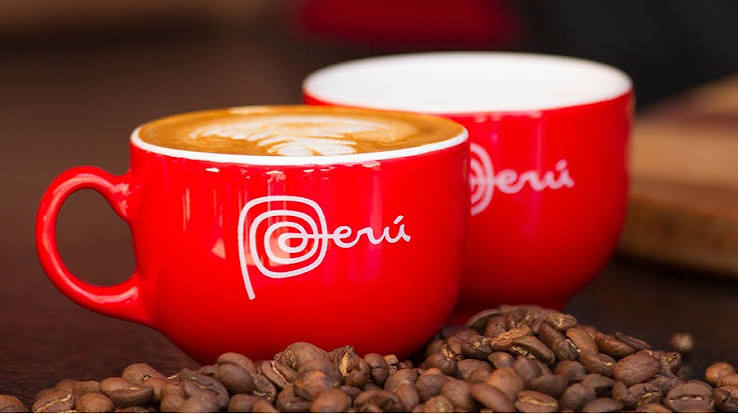
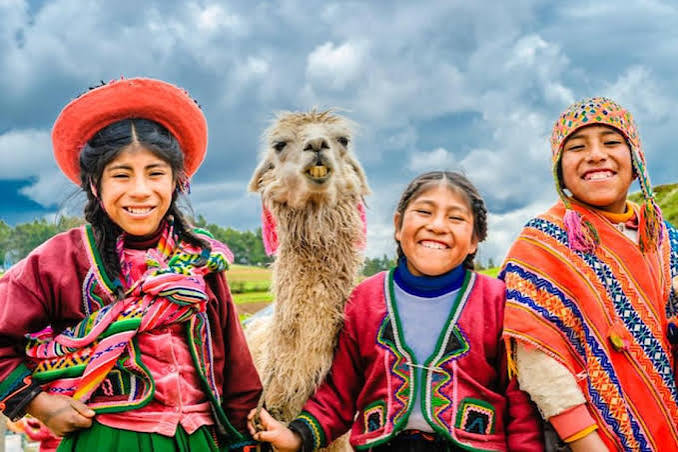
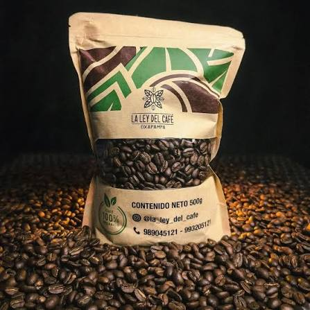
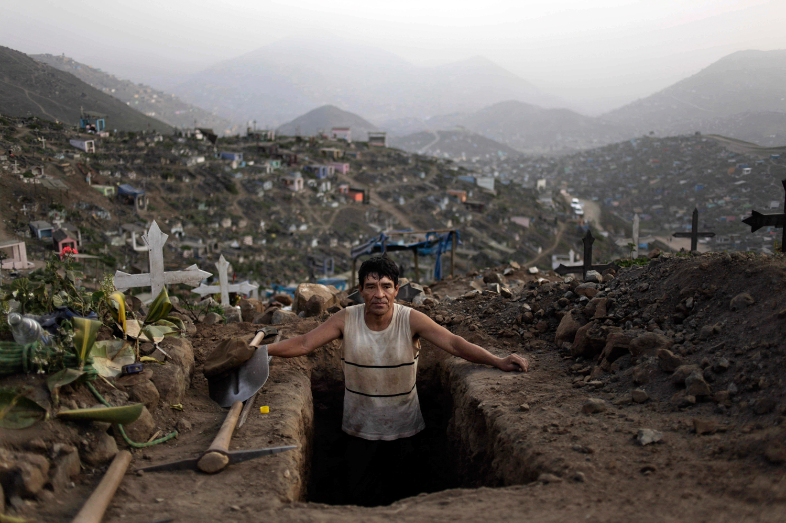
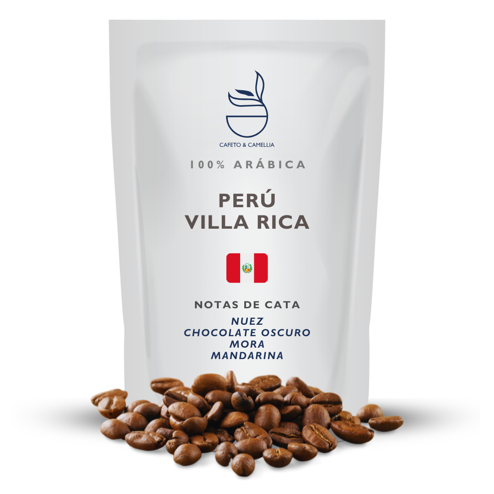
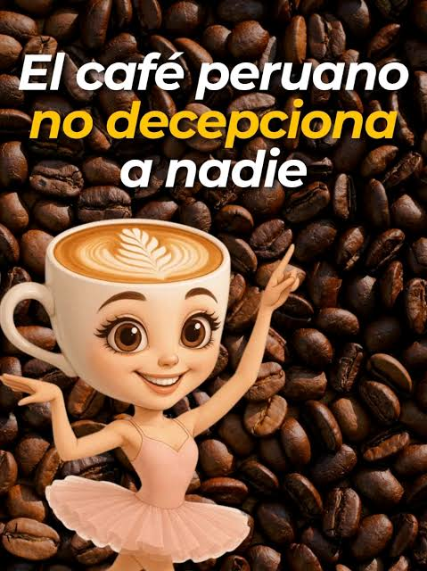
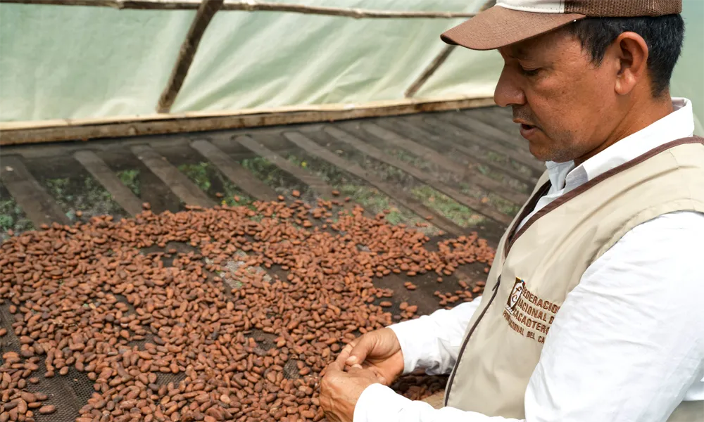
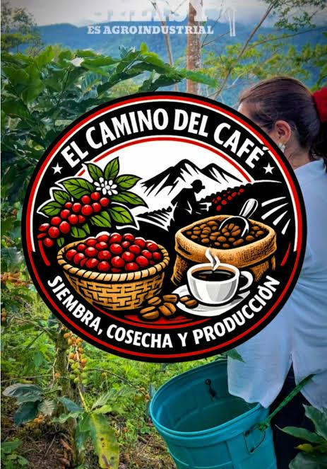
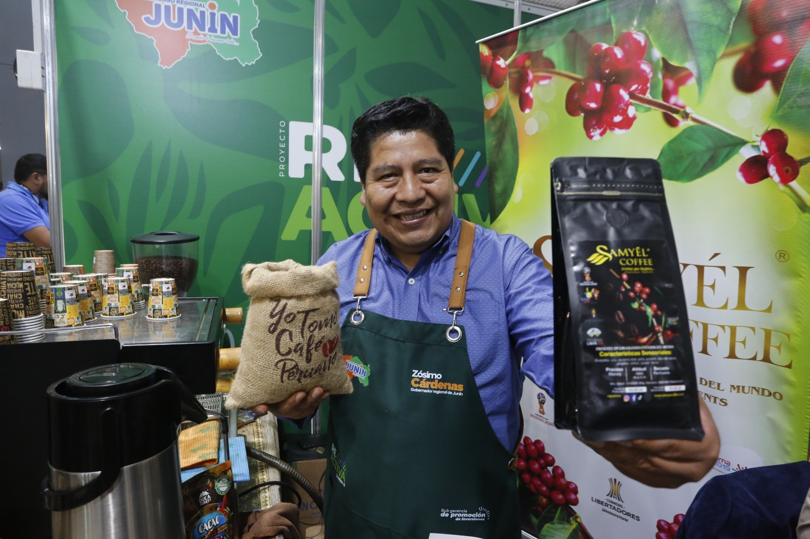
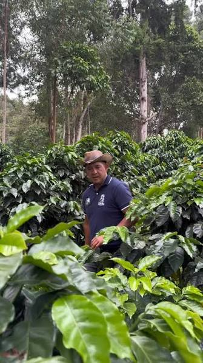

Cafe Peruano, utilizando los mejores cosechas posibles de peru.

Recolectores de cafe peruanos, trabajando en condiciones ideales para la region.

La bolsa de cafe, ya con la mejor calidad de granos de cafe peruano.

Diferentes datos e informacion sobre el cafe peruano.

Otra iteracion diferente del cafe que utilizamos.

Banner publicitario del cafe peruano.

Control de calidad del cafe peruano.

Simbolo de una marca del cafe peruano.

Un venderdor de cafe peruano.

Un cosechador en proceso de recolección.